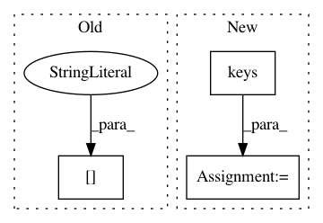

55f48d27eedae9bb7f88c928cb979433f4592196,src/sdk/pynni/nni/nas_utils.py,,classic_mode,#Any#Any#Any#Any#Any#Any#Any#,24
Before Change
if trial.get_current_parameter() is None:
trial.get_next_parameter()
mutable_block = trial.get_current_parameter(mutable_id)
chosen_layer = mutable_block[mutable_layer_id]["chosen_layer"]
chosen_inputs = mutable_block[mutable_layer_id]["chosen_inputs"]
real_chosen_inputs = [optional_inputs[input_name]
for input_name in chosen_inputs]
layer_out = funcs[chosen_layer](
After Change
if trial.get_current_parameter() is None:
trial.get_next_parameter()
chosen_layer, chosen_inputs = _get_layer_and_inputs_from_tuner(mutable_id, mutable_layer_id,
list(optional_inputs.keys()))
real_chosen_inputs = [optional_inputs[input_name] for input_name in chosen_inputs]
layer_out = funcs[chosen_layer]([fixed_inputs, real_chosen_inputs], **funcs_args[chosen_layer])
return layer_out
In pattern: SUPERPATTERN
Frequency: 3
Non-data size: 3
Instances
Project Name: microsoft/nni
Commit Name: 55f48d27eedae9bb7f88c928cb979433f4592196
Time: 2019-09-16
Author: Quanlu.Zhang@microsoft.com
File Name: src/sdk/pynni/nni/nas_utils.py
Class Name:
Method Name: classic_mode
Project Name: uber/ludwig
Commit Name: f1a9e526a5bd16fcf396645c4d08552f55d02ac2
Time: 2020-01-11
Author: jimthompson5802@aol.com
File Name: ludwig/train.py
Class Name:
Method Name: kfold_cross_validate
Project Name: NervanaSystems/coach
Commit Name: 39a28aba95b0d8eeb56f7a17b7dad140e601b591
Time: 2018-02-21
Author: zach.dwiel@intel.com
File Name: agents/value_optimization_agent.py
Class Name: ValueOptimizationAgent
Method Name: tf_input_state